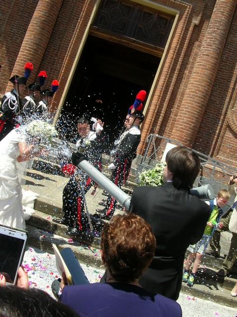

Extra - Confetti Cannon
My sister get married during the fabaccademy course so i decide to build something special and extrange for her(and especially noisy, really noisy).
the main idea is to make a wind blower who will fire some confetti right in the face of married couple...this a method to pull out all the stress that the couple give me in the past yeas because of the marriage preparation....
in my career i do a lot of aircraft radio controlled modelling, for this reason i have a good knowledge on brushless motor, fan blade and wind "rules".
My idea is to build a venturi tube that reduce the di9ameter of blowing fan and increase the speed of air , so it will create a depression in the secondary inclined tubes that will blow out the confetti.
I design and print the "conveyor" in Rhino using the feature of aerodynamic tool.
file are available at bottom of the page.
The electronic part is made of :
Brushless motor 40 A 1.2 kg of trust
2200 mAh lipo battery 30c
Arduino nano ( control side)
Arcade push-button
The code charge in the arduino nano is this:
I have to use the microsecond function instead of the set speed in the servo library for a question of the precision of the command,( the ESC i used is really powerful and for that reason have a high level protection and if it detects a "noisy" signal it goes in protection mode)
// this uses the Arduino servo library included with version 0012
// caution!!!
// make sure the motor is mounted securily before running.
#include < Servo.h>
Servo motor;
const int buttonPin = 9; // the number of the pushbutton pin
const int ledPin = 13;
int buttonState = LOW; // variable for reading the pushbutton status
int prevstate= HIGH; //prevoius state of button
int repeat = 0;
int pos = 0;
void arm(){
motor.writeMicroseconds(1000);
delay(4000);
}
void setup()
{
pinMode (buttonPin, INPUT);
pinMode(ledPin, OUTPUT);
motor.attach(10);
motor.writeMicroseconds(1000);
delay(2000);
arm();
}
void loop()
{
buttonState = digitalRead(buttonPin);
if (buttonState == LOW){
digitalWrite(ledPin, LOW);
motor.writeMicroseconds(1000);
}
else{
digitalWrite(ledPin, HIGH);
motor.writeMicroseconds(1750);
}
delay(200);
}
The batter is connected to the ESC that gives the 5v to Arduino nano and control the motor.
The arduino nano arm the ESC at the start up (needed because is heavy protected for not voluntary start up of the fan DANGER!!!!!).
After the arming process(announced by some sound) the arduino check forever the button and when it is pressed it will send a command to the esc and set the motor a 80 % of speed ( I didn't use 100% because the motor is too Strong for the structure.)
At the button release the arduino set the speed to 0.
i connect the ESC signal to pin 10 and the button to pin 9 on the Arduino nano.
for the structure i use 9 cm diameter hydraulic plastic tube cut at the desired size, and a 45 degree junction.
the "loader" for he confetti is a tube with a cork on the final part.
After i check all I built also a protection grid to make the fan more protected from external object.
the file are at the bottom of this page.
follow the picture.
Download the 3d file of the confetti cannon
And here some picture of me SHOOTING confetti at the marriage.... LOUD AND PROUD
